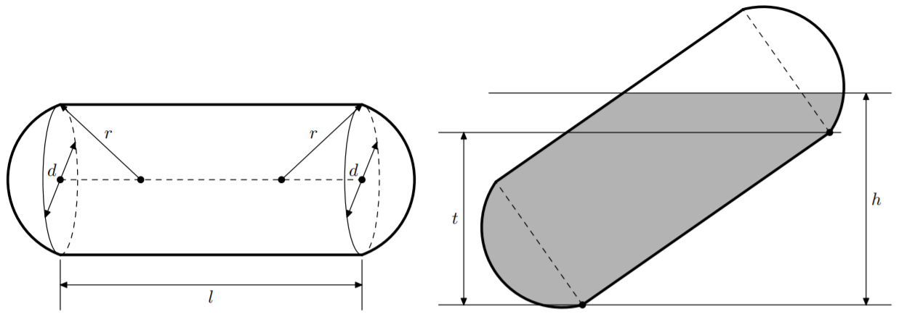
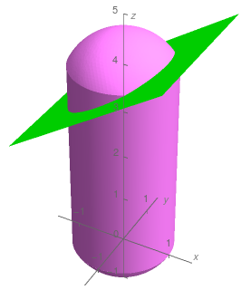
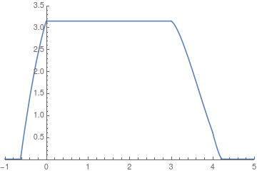

有一个球底圆柱，直径为 $d$，高度为 $l$，底面是半径为 $r$ ($r \geq \dfrac d2$) 的球面。如下左图所示：
现在这个圆柱发生了侧翻，具体地址，底面中心的高度差为 $t$。现在圆柱里存储了一些水，水面高度距离底面边界的高度为 $h$，如上右图所示：
请计算出圆柱中水的体积。
共一行，包含五个非负整数 $d, l, r, t, h$ ($100 \leq d, l \leq 10000; \dfrac d2 \leq r \leq 10000; 0 \leq t \leq l; 0 \leq h \leq t + \dfrac dl \sqrt {l^2 - t^2}$)，分别表示圆柱的底面直径，高度，底面的球面半径，倾斜度和水面高度。
输出一行一个实数，表示圆柱中水的体积，绝对误差不超过 $0.1$。
由定义知圆柱的倾角等于 $\theta = \arcsin \dfrac tl$，再记 $r_0 = \dfrac d2$。
考虑以底面中心为圆点，平行于圆柱方向为 $z$ 轴，平行于水面方向为 $y$ 轴建立坐标系，如下图所示：
则在新的坐标系下，水平面的方程为 $$ \cos \theta \cdot x - \sin \theta \cdot z + \left( h - r_0 \cos \theta \right) = 0 \tag 1 \label 1 $$
显然直接计算体积并不容易，因此我们考虑用垂直于 $z$ 轴的平面去截这个水柱，设平面 $z = z_0$ 截水柱所得到的面积为 $A \left( z \right)$，则水柱的总体积就等于 $$ \int_{- \left( r - t \right)}^{l + r - t} A \left( z \right) \mathrm dz \tag 2 \label 2 $$ (其中 $t = \sqrt {r^2 - r_0^2}$ 表示球心到底面中心的距离)
考虑计算 $A \left( z \right)$，可以发现水的截面为一个圆形或弓形。我们分别计算这个圆的半径和弓形的弦的方程。
计算圆的半径 $R = R \left( z \right)$。
计算弓形的弦的方程。
由 $\eqref 1$，可以通过 $z$ 解出 $x$，记为 $x_0$。则弓形的弦的方程为 $x = x_0$。
(ps: 这里要注意 $\theta = \dfrac \pi 2$ 时的情形，此时 $x$ 的系数为 $0$，对应的几何意义就是 "圆柱" 是直立摆放的，从而当 $z \leq h$ 时截面是半径为 $R \left( z \right)$ 的圆，否则截面为空)
当 $x \leq - R \left( z \right)$ 或 $x \geq R \left( z \right)$ 时，截面为圆或空，面积容易计算。
否则截面为一个弓形，可以通过初中数学或定积分计算面积：$$ A \left( z \right) = \int_{x_0}^R \sqrt {R^2 - x^2} \mathrm dx = R^2 \arccos \frac {x_0} R - x_0 \cdot \sqrt {R^2 - x_0^2} $$
现在我们已经可以对任意 $z$ 求出 $R \left( z \right)$ 的值了，于是求体积就只需计算一个定积分 ($\eqref 2$ 式)。
由于这个函数的表达式很复杂度，且分段很多，故直接计算积分的表达式有点困难。不过由于函数是分段光滑的，因此可以使用 (自适应) Simpson 积分解决。
具体地，可以根据 "圆柱" 的结构，在下半球缺部分 $\left[ - \left( r - t \right), 0 \right]$，圆柱部分 $\left[ 0, l \right]$ 和上半球缺部分 $\left[ l, l + \left( r - t \right) \right]$ 部分分别积分最后再相加 (如下图所示)：
时间复杂度 $O \left( \left| \log eps \right| \right)$。
#include <bits/stdc++.h>
using std::cin;
using std::cout;
constexpr double sixth = 1. / 6., pi = M_PI, c1 = 16. / 15., c2 = -1. / 15., eps = 1e-8;
double r, R, h, y, t;
double sin_theta, cos_theta;
double A, B, C, iA;
// A x - B z + C >= 0
double f(double z) {
double r2 = r * r, x, a;
if (z < 0) r2 = std::max(r2 + (2 * t - z) * z, 0.);
else if (z > h) r2 = std::max(r2 - (2 * t + z - h) * (z - h), 0.);
if (!A) return B * z <= C ? pi * r2 : 0;
x = (B * z - C) * iA;
if (x * x >= r2) return x < 0 ? pi * r2 : 0;
a = acos(2. * x * x / r2 - 1) / 2;
return r2 * (x < 0 ? pi - a : a) - x * sqrt(r2 - x * x);
}
double Simpson(double L, double M, double R, double fL, double fM, double fR) {
double LM = (L + M) * 0.5, fLM = f(LM), MR = (M + R) * 0.5, fMR = f(MR);
double A = (fL + fM * 4.0 + fR) * (R - L) * sixth,
AL = (fL + fLM * 4.0 + fM) * (M - L) * sixth,
AR = (fM + fMR * 4.0 + fR) * (R - M) * sixth,
I = c1 * (AL + AR) + c2 * A;
if ((R - L < sixth && I < 1.) || fabs(AL + AR - A) < eps * std::max(1., I)) return I;
return Simpson(L, LM, M, fL, fLM, fM) + Simpson(M, MR, R, fM, fMR, fR);
}
int main() {
double Left, Mid, Right, ans = 0.;
std::ios::sync_with_stdio(false), cin.tie(NULL);
cin >> r >> h >> R >> sin_theta >> y, r *= .5, sin_theta /= h,
assert(r <= R), assert(0. <= sin_theta && sin_theta <= 1.),
t = sqrt(R * R - r * r), cos_theta = sqrt(1. - sin_theta * sin_theta),
A = cos_theta, B = sin_theta, C = y - r * cos_theta, iA = 1. / A;
Left = t - R, Right = 0.,
Mid = (Left + Right) * .5, ans += Simpson(Left, Mid, Right, f(Left), f(Mid), f(Right)),
Left = 0., Right = h,
Mid = (Left + Right) * .5, ans += Simpson(Left, Mid, Right, f(Left), f(Mid), f(Right)),
Left = h, Right = R - t + h,
Mid = (Left + Right) * .5, ans += Simpson(Left, Mid, Right, f(Left), f(Mid), f(Right)),
cout << std::setprecision(12) << ans * 1e-6 << '\n';
return 0;
}
坑1：在原题中注意单位，最后要将答案乘以 $10^{-6}$。
坑2：当 $\theta = \dfrac \pi 2$ 时，"圆柱" 是直立摆放的，此时函数 $A \left( z \right)$ 有间断点，积分时会递归比较多的层数 ($I_L + I_R - I$ 不会小于 $eps$)，因此需要手动判断当 $R - L < \delta$ 时 break。注意 $\delta$ 不能太大，否则还会有误差。